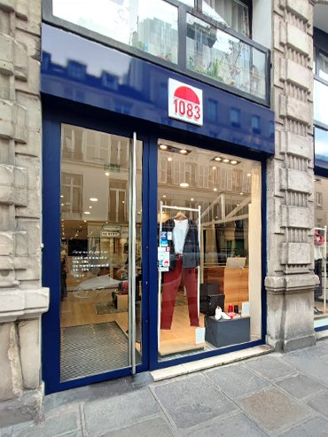

1083
Romans-sur-Isère, Drôme
French jeans brand producing 100% locally in Romans-sur-Isère. They focus on
short supply chains, fair wages, and durable denim that lasts for years, not seasons.
Visit Website →
WeDressFair
Lyon, France
Lyon-based concept store (4 rue des Capucins) specializing in ethical and sustainable fashion.
They carefully select brands committed to fair trade, organic materials, and transparent
production processes.
Visit Website →
Sessùn
Romans-sur-Isère, Drôme
Marseille-born brand creating feminine, bohemian clothing with a strong commitment to
sustainability. They use eco-friendly fabrics, support local production, and design
pieces meant to last beyond seasonal trends.
Visit Website →